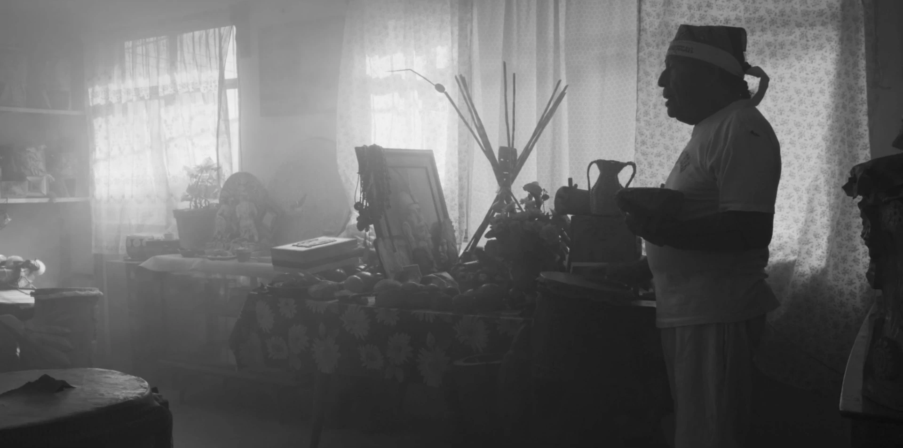

2021/03/22
Con todo respeto, una ventaja de ver películas por medio de “streaming” es que le puedes adelantar, poner pausa, etcétera. No niego que se antoja sentarse en una sala llena de gente con dos horas para gastar y dejarse llevar por los estímulos audiovisuales de una proyección de un buen metro y medio aunque sea de alto. Pero a un año del COVID-19, el esfuerzo para concentrarse por más de 5 minutos en un solo medio podría acabar con lo poco que queda de mi salud mental.
Pensé que era una buena forma de empezar a hablar sobre esta película, aunque el comentario no tiene nada que ver, pero digamos que ya para este punto hemos “roto el hielo”, tú y yo, e incluso te diría que no tenemos ya nada qué ocultarnos. Tú y yo podemos tener completa honestidad y decirnos las cosas como son. Por lo tanto, y para no "hacerla de emoción”, o el famosísimo “cuento largo”, déjame decirte que la pieza cinematográfica “Ciudad” es una buena película que vale la pena ver.
¿Por qué? Porqué logra presentar las complejidades de la Ciudad de México con imágenes que rozan pero no caen en el famoso “lugar común”, y a su vez evita la salida fácil, la historia lineal. En cambio las escenas van sugiriendo poco a poco en una red de interrelaciones antropológicas que marcan la vida en la ciudad.
No hay voces que narran, hay algunos diálogos aquí y allá pero principalmente la experiencia de la película se trata sobre dejarse llevar por las composiciones, los sonidos, la música y las situaciones. Honestamente todo está muy bien logrado, tiene "acá" unos encuadres que dices: "aaaaaahhhh, apoco sí?". Entonces te la pasas bien y piensas cosas.
Habrá chance uno que otro detalle que dices “mmm”, como cuando le piden a unos hombres con la cara tatuada que vean a la cámara durante sus buenos 30 segundos cada quién. Y así, hay uno que otro momento CRINGE , pero también la Ciudad de México® y el Cine® son CRINGE, entonces tampoco sorprende y se vale, pues.
El documental no presenta a la ciudad desde la estética oficial CDMX/Nueva Berlín. Por el contrario podríamos decir que se esfuerza por presentar una visión menos centralizada o gentrificada. De igual manera el mismo acto de filmar una ciudad con una cierta sensibilidad fotográfica, en blanco y negro, etc, ya tiene algo de esa connotación, ya lo vuelve un espectáculo que se mueve en ciertos circuitos y creo que es bueno tomarse este espacio para pensar en eso.
[ESTE ES EL ESPACIO PARA PENSAR EN SÍ EL CINE….]

Por otro lado, sí hay un proceso crítico en las imágenes, se intuye un cierto respeto y responsabilidad por producir un retrato desde la contradicción interna hacia la contradicción universal de la Ciudad®. Por lo mismo, todo este cuestionamiento es pertinente dentro del espacio de reflexión que te permite la misma película, y por lo tanto, la producción se lleva esa victoria a casa.
Por último, y recapitulando, “Ciudad” es un desencadenamiento de contradicciones, construida sobre los conflictos que marcan la vida en la ciudad: la desigualdad, la violencia o la precariedad del capitalismo tardío. Sin embargo se mueve con una ligereza de montaje y solemnidad estética que por un lado nos “digiere” el conflicto, pero por otro lo vuelve algo “sublime”. Y eso no sé si sea una victoria para la producción. Es un poco como este arte de “denuncia” que se exhibe en museos para producir valor agregado y termina exotizando o decorando la precariedad. Pero no quiero decir que esta película necesariamente caiga en eso, solo es una dimensión, o un pensamiento.
Lo digo porque el trabajo de Maya Goded, una de las co-directoras del documental, cuya práctica parte del fotorreportaje, tiene una perspectiva periodística y un valor más allá del “espectáculo” o el valor agregado del arte. El sentido documental de la fotografía, o el cine en este caso, y su dimensión estética están basados precisamente en comunicar todas estas contradicciones, y es por esto que he insistido en ello durante los últimos tres párrafos, pero es tiempo de ir cerrando.
No quise mencionar casi ninguna de las escenas de la película para que la puedan ver sin mucho sesgo, y más bien, espero que si leen esto antes de verla, o tal vez después, les haga sentido este texto y se cumpla la función del cine como espacio de reflexión.
¡Gracias!